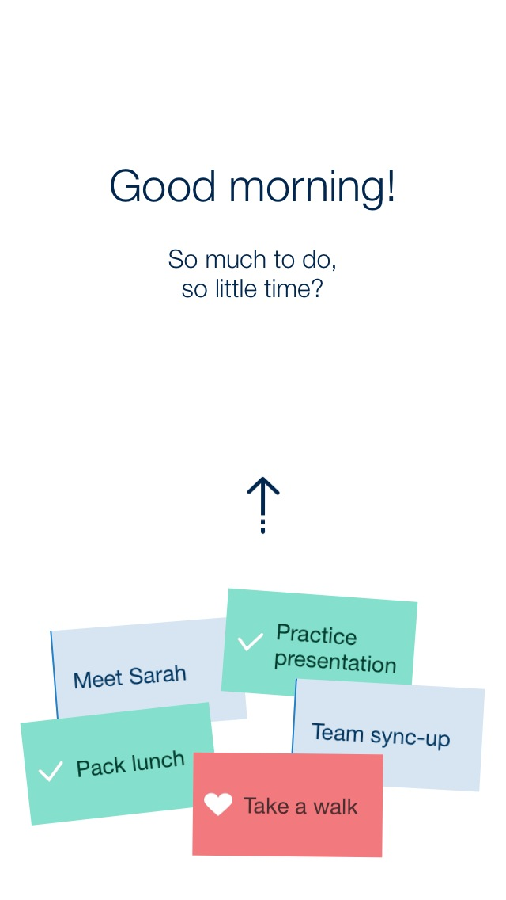

Timeful was a Palo Alto based startup founded by the behavioral economist — and author of Predictably Irrational — Dan Ariely, Stanford AI and Game Theory professor Yoav Shoham, and Jacob Bank — a Stanford CS student whose work in automated scheduling led directly to the project.
The idea behind Timeful was that our calendars reflect other people's demands on our time at the expense of our own goals and aspirations — what if AI could help make time for the things that are important to us?
I joined in 2013, focusing largely on iOS engineering and some interaction design. I got to pitch in on everything from product design to marketing, and learned a ton from Dan about how our automatic behaviors shape us.

A core feature of the app was "Habits" — recurring time in the calendar for things important to you, like running or meditating. Machine Learning algorithms would build an understanding of your scheduling preferences, and schedule notifications so that you'd be more likely to go for that run.
Google acquired Timeful in 2015. One of our first big projects was incorporating habits into Google Calendar, which launched as Google Goals.